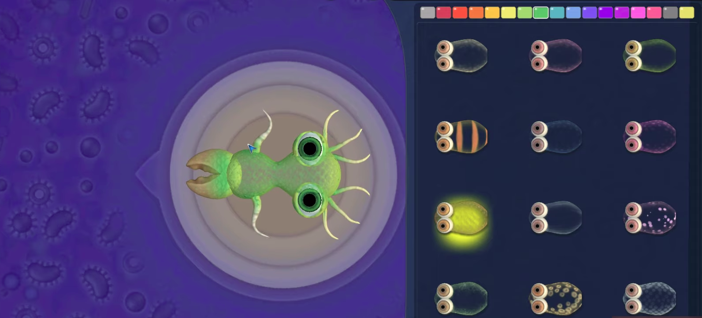
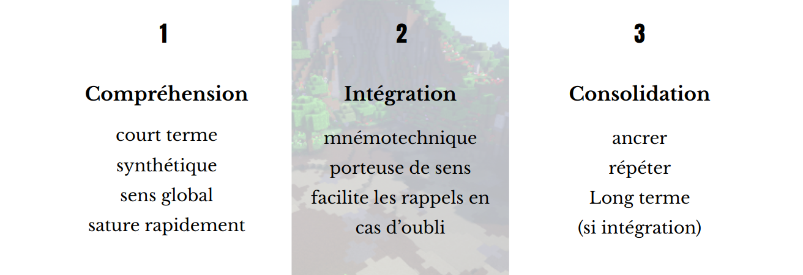

Le serious game a-t-il sa place à l'école ?
Au cours de la dernière décennie , malgré un marché saturé du côté des jeux vidéo, les serious games connaissent un essor : la gamification, qui transpose des mécanismes ludiques dans des domaines sérieux, plaît particulièrement au grand public . Le serious game va jusqu’à s’implanter dans les entreprises pour motiver les salariés, et se fraye désormais un chemin vers l’école. En effet, depuis 6 ans, l’Education nationale s’inquiète de voir le décrochage scolaire , les lacunes et l'illettrisme gagner du terrain. C’est alors que l’État a investi, en 2014, près de 21 millions d’euros dans le développement d’un nouveau programme basé sur les serious games, destiné aux écoles primaires et aux collèges. Il s’agit de mettre en place de nouvelles techniques d’apprentissage, mais qu’adviendra-t-il de l’école telle que nous la connaissons aujourd’hui ?
Remplacer les leçons et les exerices ?
Pas tout à fait : dans la salle de classe, le contenu délivré par l’enseignant reste primordial. C’est ce qu’expose Eric Sanchez lors de la conférence Apprendre en jouant vs Apprendre du jeu. Fondateur du laboratoire d’innovation pédagogique, il co-développe avec une équipe d’enseignants des serious games, dans le but de les utiliser comme support pédagogique en classe. Selon lui, le jeu ne constitue qu’une porte d’entrée vers l’apprentissage : il est nécessaire de sortir du jeu pour prendre du recul. Par exemple, pour un jeu qui vise à vulgariser le concept de photosynthèse, certains aspects concernant le fonctionnement des plantes ont été simplifiés ou exagérés : le tout manque de nuances. Et c'est tout à fait normal, car le jeu doit servir de première approche et n’est en rien le cours au complet.
Notons que c'est l'enseignant qui donne le ton. Prenons l'exemple de Spore, un jeu de gestion dans lequel il revient au joueur de faire évoluer une espèce animale selon son bon vouloir. Ce jeu suit un modèle de dessein intelligent, selon lequel les changements de l'univers se font grâce à la présence d'une entité savante, ici incarnée par le joueur. Au détour d'un documentaire Arte 1, j'ai pu voir qu'aux Etats-Unis, dans le Missouri, un pasteur conservateur utilise ce même jeu pour réfuter la théorie de l’évolution et tout ce qui en découle (la sélection naturelle, l’existence des dinosaures et autres espèces disparues). À l'inverse, dans les établissements publics, favorables à la théorie de l'évolution, les professeurs expliquent aux élèves que la réalité est tout autre, en utilisant aussi Spore comme support. Le jeu, quel qu'en soit le contenu, sert le propos qu'on veut bien lui prêter.
Une capture du jeu Spore, où le joueur fait évoluer une espèce de la manière qu'il souhaite.
L’intervention du professeur après l’expérience de jeu est ce que Eric Sanchez a nommé le débriefing. Il est alors question de pointer les concepts qui ont été mobilisés à travers nos actions in game. Comme nous venons de le constater avec Spore, c’est à l’enseignant de souligner les limites des connaissances véhiculées par le jeu. Eric Sanchez met un point d’honneur à vouloir formaliser le débriefing, car il est souvent mal exécuté. Son rôle est de transformer les connaissances en savoir. Là où la connaissance s’inscrit dans un contexte précis, au travers d’une vision subjective, le savoir est universel, à sens unique, et il est de ce fait partageable quel qu’en soit le contexte. Cette déconstruction, dirigée par le professeur, doit se décomposer en 4 étapes :
- “Feelings” : Recueillir les premières impressions sur le jeu, qui permettent éventuellement de donner des pistes de concepts à clarifier par la suite. Cela permet aussi de constater si le serious game a eu l'effet escompté. Dans le cas contraire, il sera modifié.
- “Awareness” : Conscientiser que l’on a appris quelque chose. Le jeu est une expérience agréable, mais c'est justement à cause de cet aspect qu'on ne se rend pas toujours compte que l’on apprend au moment où l'on joue.
- “Validation” :Définir, détailler et formaliser les concepts rencontrés.
- “Generalization” : Imaginer des situations concrètes dans lesquelles on peut appliquer les savoirs fraîchement acquis.
Notons que les noms des étapes sont définis en anglais, car les recherches sur le sujet sont toujours en cours : les équivalents français ne sont, à ce jour, pas établis.
Sans débriefing, il n’y a pas de formalisation, et donc pas d’apprentissage solide et durable. Nous avons ici la preuve que le jeu et l’enseignement tel qu’il existe déjà sont bien complémentaires, car il n’est pas question de faire table rase sur les méthodes d’enseignements dites “classiques”. L’apprentissage par un cours plus formel se fait notamment lors de l’étape “Validation” du débriefing.
Néanmoins, ces méthodes ne sont applicables que dans le cadre d’un cours, grâce à la présence d’un enseignant. Hors de la salle de classe, il faut aussi apprendre par soi-même et mémoriser, en vue d’une évaluation ou d’un examen par exemple. C'est ainsi qu'une autre approche, combinant méthodes ancestrales et serious game, a été mise en place par Valentin Rozé. Alors qu’il est encore étudiant, il crée MarginalSup, un guide en ligne qui apporte des solutions concernant les frustrations et problèmes liés aux études. Il y décrit un système scolaire et universitaire dépassé, qui nous demande par exemple d’apprendre des leçons par cœur, et qui ne seront pas mémorisées sur le long terme. Ça nous est déjà tous arrivé : on “bachote” pour un examen, et quelques jours après, on a tout oublié ! Prenons aussi en compte la fatigue générée par les révisions, qui elle-même est porteuse de stress. Or, un stress important ou répété peut bloquer l’apprentissage.
Pour retenir ses cours sur la durée et de façon plus agréable, Valentin Rozé développe une technique particulière : créer son palais mental grâce à Minecraft afin d’y représenter ses notions de cours.
Mémoriser grâce au jeu : Un palais mental sur Minecraft
À l’instar du jeu vidéo, le palais mental utilise la mémoire spatiale, très efficace pour nous aider à reformer une image nette d’un lieu que l’on fréquente régulièrement 2. Il a également recours à la mémoire épisodique, grâce à laquelle on se souvient d'événements qui se sont déroulés dans un contexte précis. Étant donné que nous utilisons ces deux types de mémoire de façon quotidienne et naturelle , il n’est pas aberrant de chercher à les utiliser pour apprendre plus facilement. Mémoriser grâce au palais mental se fait par la répétition : il faut rejouer dans sa tête un parcours, qui contient plusieurs points d’intérêt (des lieux, appelés ancres) auquels on aura associé des informations. Aussi ancestrale et efficace soit elle, la technique du palais mental a ses limites, car elle exige énormément de rigueur. En effet, pour mémoriser des informations sur le long terme, il est nécessaire d’y passer du temps et de répéter les parcours fréquemment. De plus, bien que notre mémoire spatiale et notre mémoire épisodique soient sollicitées, les souvenirs que nous avons de notre palais mental sont fictifs. Et bien que le cerveau soit capable de créer et stocker de faux souvenirs, ceux liés au palais mental sont plus fragiles, car créés de toutes pièces et de manière consciente 3. Il n’est donc pas improbable que des éléments de notre propre palais mental nous échappent avec le temps.
C'est précisément là que Minecraft intervient ! Le jeu permet de matérialiser notre palais mental. De plus, le style bac à sable du jeu permet de personnaliser notre univers virtuel à notre guise : en y ajoutant des scripts, en créant des systèmes mécaniques, et en exprimant notre créativité avec les outils à notre disposition ! On est à mille lieues du côté rébarbatif des révisions. Idriss Aberkane, chercheur en neurosciences, définit le jeu comme ayant une « faible barrière d’entrée, et une forte barrière de sortie » : c’est ce qui le rend si addictif. Dans notre cas, c’est parfait, car on veut pouvoir parcourir notre palais mental régulièrement et sérieusement ! Lui-même étudiant en psychologie, Valentin Rozé explique que le procédé par lequel nous retenons habituellement des informations se découpe en 3 parties :
- La compréhension. Elle est synthétique et permet de retenir des informations atomiques, en petite quantité.
- L’intégration : elle facilite les rappels en cas d’oubli, en faisant par exemple appel à des moyens mnémotechniques.
- La consolidation. Il s’agit d’ancrer les informations dans notre mémoire, sur le long terme donc. Pour y parvenir, il faut impérativement passer par la phase 2.
Or, en période de révisions, c’est la phase 2 que les étudiants ont tendance à négliger, alors qu'elle est essentielle pour pouvoir consolider nos connaissances par la suite. Minecraft vient ainsi servir de pilier à cette deuxième phase, comme moyen de rappel.
Mise en pratique du palais mental
Curieuse de tester la technique de Valentin Rozé, j’ai mis en place mon propre palais mental sur Minecraft avec un objectif en tête : tenter d’apprendre, en quelques jours, 50 mots en allemand via cette technique, et 50 autres mots selon mes techniques de révisions habituelles. J’utilise principalement des Flash Cards, qui sont des papiers contenant, au recto le mot en français, et au verso le mot en langue étrangère. Je n’ai pas souhaité apprendre par cœur car je ne fonctionne plus de cette manière depuis quelques années : je souhaite être honnête dans ma démarche et mesurer les résultats du palais mental en le comparant avec une méthode que j’utilise et que je sais efficace pour moi.
L’idée est de faire comme si j’avais un contrôle de vocabulaire dans les jours qui suivent, comme j’ai pu en avoir quelques années auparavant. Je me suis laissé un total d’une semaine, dont 4 jours pour mettre en place le palais mental et les Flash Cards. Les 3 autres jours ont servi pour les révisions à proprement parler.
En faisant mes recherches, j’ai rencontré bon nombre d’articles, de blogs et de vidéos vantant les mérites du palais mental pour apprendre du vocabulaire dans une autre langue. Le conseil que j’ai trouvé le plus souvent est de se représenter mentalement une ville que l’on connaît bien : celle où on a grandi par exemple. Il s’agit ensuite de créer des ancres entre un lieu choisi, évocateur, et le vocabulaire donné. Par exemple : « Usine -> “factory” (que je transforme en “facteur” et que j’imagine en équilibre au sommet de l’usine à la grande cheminée de ma ville) » 4
Pour transposer cette manière d’apprendre dans Minecraft, j’ai mélangé cette technique et celle de Valentin Rozé. J’ai commencé par créer une maison et des éléments de décor, pour qu’ils me soient familiers. Pas de palais mental ici, juste de la création pure pour s’approprier les lieux. Ensuite, j’ai tiré au sort les 100 mots, dont 50 pour le palais mental. J’ai regroupé certains d’entre eux par thématique : j’avais par exemple faune et flore, criminalité et parkour. À chaque champ lexical correspond une zone bien délimitée du palais mental que j’ai confectionné, dont en voici une partie en vue aérienne :

Les thématiques criminalité (rouge), faune & flore (vert) ainsi que parkour (jaune) représentées dans leurs zones respectives. Cela ne représente qu’une partie des mots sélectionnés, les autres zones se situant sur une autre partie de la carte.
D’après Valentin Rozé, associer une zone à un champ lexical permet d'effectuer une première localisation d'un mot, et plus généralement d'apporter une structure à notre mémoire. Par exemple, j'ai placé le mot "Maultiertreiber" dans la zone verte. Si on m'interroge sur son sens, je l'associe dans un premier temps à sa zone, et donc à son champ lexical : la faune et la flore. À l’intérieur de chaque zone, j’ai associé chaque mot à une structure que j’ai moi-même créée en jeu. Par exemple, toujours pour le mot “Maultiertreiber", j’ai associé une mule attachée à une barrière. Je me souviens alors que cela signifie "le muletier". J’ai procédé ainsi pour tous les mots.

NB : la traduction des mots en français ne figure pas dans le palais mental. J’estime qu’il était plus intéressant d’apprendre directement le mot en l’associant uniquement à son ancre, plutôt que de passer par l’intermédiaire français. C’est comme quand on a appris le français en étant petit, en aucun cas on nous a donné d’équivalent linguistique (car on n’en avait tout simplement pas) : on nous a parlé, mimé, montré, répété, fait expérimenter. En cas de force majeure (gros trou de mémoire) , j’avais la traduction sur un document annexe, mais j’ai essayé de ne pas m’y référer.
Pour “l’examen”, j’ai dressé la liste des 100 mots, mélangés aléatoirement, sans faire de distinction entre ceux que j’ai appris grâce à Minecraft, et ceux appris grâce aux Flash Cards. J’ai fait le test deux fois. Une fois avec tous les mots en allemand, l’objectif étant d’écrire en face leur traduction en français, et une seconde fois en faisant l’inverse : tous les mots en français, et je devais retrouver les équivalents en allemand (plus complexe). J’ai ensuite reporté les résultats.
| Allemand → Français | Français → Allemand | |
|---|---|---|
| Palais mental | 48/50 | 43/50 |
| Flash Cards | 42/50 | 36/50 |
On observe, de manière flagrante, et surtout lorsqu’il s’agit de restituer les mots en allemand, une plus grande efficacité du côté du palais mental. Cependant, je tiens à nuancer certains points. La mise en place du palais mental m'a demandé beaucoup plus de temps que d'écrire les Flash Cards. Comptons 4h de jeu pour illustrer les 50 mots. Je ne prends même pas en compte le temps que j’ai passé à construire l’île, les habitations et les décors aux alentours : je conseillerais de faire cette première étape en différé. En parallèle, il m'a fallu moins d'une heure pour écrire les Flash Cards.
Cependant, le fait de devoir anticiper l'emplacement de chacune des ancres, de cartographier les mots selon leur champ lexical et de chercher des éléments de jeu issus de Minecraft pouvant mettre en scène ces mots constitue une première étape de mémorisation. Contrairement à la technique des Flash Cards, il y a tout un aspect de storytelling et de mise en scène qui intervient. C'est d'ailleurs ce que Valentin Rozé explique lorsqu'il présente la technique : il faut tout créer soi-même, et personnaliser au maximum. Le fait d'être acteur et de prendre des décisions concernant tel ou tel mot permet de lui accorder une petite place dans notre mémoire, qu'il faut par la suite consolider via le parcours.
J'ai constaté très rapidement à quel point l'expression "faible porte d'entrée, forte porte de sortie" utilisée par Idriss Aberkane est pertinente concernant le jeu. Je n'ai pas vu le temps passer en construisant les ancres, parce que j'étais tout simplement en train de m'amuser. Je me suis même surprise, avant de m’endormir, à refaire le tour des lieux que j'avais confectionnés, et de ressentir une certaine frustration en constatant que je n'arrivais pas à me souvenir d'un mot en particulier. Je n'avais alors qu'une seule envie : retourner sur Minecraft !
Au contraire, pour les Flash Cards, c'était plutôt : forte porte d'entrée, faible porte de sortie. Pourtant, j'ai mis un point d'honneur à réviser sérieusement avec les deux méthodes pour éviter de délaisser les révisions classiques. À volonté de réussite égale, force est de constater que la charge mentale des révisions classiques se fait bien plus ressentir. J'étais plus stressée, plus frustrée en cas d'échec, contrairement au jeu, où je n’ai à aucun moment ressenti de telle frustration. Le fait de s'amuser en apprenant dédramatise considérablement l'erreur : cela se ressent dans les résultats, car j'étais sans aucun doute plus confiante dans mon apprentissage via le palais mental numérique.
J’émets cependant quelques réserves sur le fait que créer son palais mental dans Minecraft fonctionne à tout âge. La méthode est très bien détaillée et documentée, mais il m’a fallu moduler certaines approches pour qu’elle corresponde mieux à mon propre fonctionnement. Or c’est avec l’expérience que j’ai compris comment je fonctionne, c’est pourquoi je doute de sa pleine efficacité sur des collégiens ou des lycéens par exemple. C’est sans doute pour cette raison que Valentin Rozé donne désormais des cours de technique de mémorisation et d’organisation en faculté : cela permet d’encadrer un minimum et de présenter des variations possibles de la méthode.
À l’avenir, faudra-t-il systématiquement privilégier l’apprentissage par le jeu ?
Serge Tisseron est psychiatre et psychanalyste. Il s’est penché sur la question de l’impact du numérique chez les jeunes enfants. 5 D’un côté, il confirme l’efficacité du jeu pour mémoriser et apprendre. Avec la génération des jeunes joueurs s’est développé un nouveau style cognitif, étayé par la pratique du jeu vidéo : ils seraient plus sensibles aux représentations visuelles et spatiales, d’où l’importance de solliciter ces aspects lorsqu’il est question d’apprendre. Il affirme également que cette population de joueurs dispose d’une intelligence déductive plus développée.
D’un autre côté, il soulève l’opposition entre la culture du livre, qui structure la pensée et la mémoire autour de la durée, à la culture des écrans, qui mise sur la spatialisation. Il est nécessaire de mélanger les deux pour garder un équilibre dans notre représentation des choses. Il blâme ici l’usage excessif des écrans. Il fait notamment écho à Lacan et au stade du miroir, c'est-à-dire au moment où le fait d’apercevoir son image dans le miroir fait prendre conscience à l’enfant de son identité. Il n’y a désormais plus un miroir, mais plusieurs : les écrans. Il serait donc plus difficile pour les enfants de s’y retrouver parmi toutes ces identités qu’il peuvent incarner virtuellement. Il semble dire qu’il serait plus judicieux de ne pas abuser du serious game auprès des plus jeunes, même dans le cadre de l’apprentissage à l’école. Du côté d’Eric Sanchez, le propos serait plutôt d’adapter le serious game pour qu’il soit bien distinct du jeu purement récréatif.
Serge Tisseron affirme qu'à la maison, les jeux vidéo permettent aux plus jeunes de s’exprimer et de retrouver une certaine estime de soi, à condition de ne pas les laisser s’y enfermer. On retrouve cette notion de “sortie de jeu” par la discussion et le débriefing, avancée par Eric Sanchez, mais dans la sphère privée. Pour Tisseron, la technologie doit simplifier, vulgariser, mais pas divertir si on veut qu’elle apprenne. Pourtant, le laboratoire d’innovation pédagogique affirme le contraire : c’est le côté léger et amusant du jeu qui fait qu’on s’intéresse à un serious game dans un premier temps. De mon point de vue personnel, le jeu m’a divertie, autant qu’il m’a permis d'apprendre, et ce sans stress. Les avis divergent, et pour cause : ces méthodes sont en cours de développement. Elles le resteront encore quelques années, il faudra donc attendre avant d’obtenir des modèles d’apprentissage stables. Peut-être sont-ils voués à évoluer constamment, au fil des progrès de la technologie ? Quoi qu’il en soit, nous pouvons nous référer à cette citation de Benjamin Franklin, qui elle, est gravée dans le marbre :
« Si tu me dis, j’oublie. Si tu m’enseignes, je me souviens. Si tu m’impliques, j’apprends »
Notes et références
1 Jan Tenhaven, Jens Strohnschneider. Les USA dans tous leurs Etats (4/5), Le test ultime. Arte. Novembre 2020.https://www.arte.tv/fr/videos/093705-004-A/les-usa-dans-tous-leurs-etats-4-5/ (Le documentaire n’est pas encore officiellement diffusé. Par chance j’ai pu le voir en avant première sur Youtube, où la vidéo est désormais privée.
2 Selon Jean-Yves Ponce, la mémoire des lieux nous permet par exemple de nous représenter de manière très fidèle notre maison, appartement, chambre, et de nous souvenir de la disposition des meubles.
3 Les "faux souvenirs", également appelés mémoire manipulée, surviennent en tant que mécanisme de défense afin de refouler un traumatisme. Ils peuvent aussi être créés suite à une perception de notre part qui diffère de la réalité. Il ne s'agit pas d'un mécanisme conscient. Ces souvenirs créés de toute pièce s'ancrent en mémoire de la même facon que des souvenirs d'événements réels.
4 Jean-Yves Ponce. « Comment votre ville préférée va faire de vous un expert en langues » Potion de vie octobre 2011
5 Serge Tisseron. « Jeux d’écrans. » L'Ecole des parents. n°600, p14. Janvier-Février 2013.
Bibliographie
Articles en ligne
Axelrad, Brigitte. « La mémoire manipulée - Souvenirs refoulés, faux souvenirs et délai de prescription » AFIS, 2015, avril. www.pseudo-sciences.org
Caroline. « Le stress bloque les apprentissages » Apprendre, réviser, mémoriser, 2019, mars. www.apprendre-reviser-memoriser.fr
Chabriac, Karen. « Entretien avec Eric Sanchez », Savoirs CDI, 2013, septembre. www.reseau-canope.fr
De Koober, Amandine. « Palais mental : comment le construire ? », Koober, 2018, avril. www.koober.com/fr/blog/les-articles
Delengaigne, Xavier. « Amusez-vous à mémoriser du vocabulaire étranger », Collectivité numérique, 2018, avril. www.collectivitenumerique.fr
Galéron, Florine. « Jeux vidéo : sur un marché saturé, les “serious game” en plein essor », La Tribune, 2015, juin. www.toulouse.latribune.fr
« Jeu sérieux », Wikipedia, 2020, octobre. www.wikipedia.org
« Jeux sérieux, mondes virtuels », Eduscol, 2014, octobre. www.eduscol.education.fr
« Le Serious Game à la rescousse de l’école », France Inter, 2014, novembre. www.franceinter.fr
Maitre, Cyril. « Mémoriser rapidement un cours en jouant à Minecraft », Apprendre Vite & bien par Cyril Maitre, 2019, septembre. www.cyril-maitre.com
Ponce, Jean-Yves. « Comment j’ai mémorisé mon cours avec Minecraft », Potion de Vie, 2018, septembre. www.potiondevie.fr/
Ponce, Jean-Yves. « Palais mental, le guide ultime », Potion de Vie, 2017, janvier. www.potiondevie.fr/
Ponce, Jean-Yves. « Comment j’ai mémorisé mon cours avec Minecraft », Potion de Vie, 2011, octobre. www.potiondevie.fr/
Schwarz, Zane. « Le par cœur, c’est l’enfer ! », L’actualité, 2016, octobre. www.lactualite.com
Vidéos
Sanchez, Eric. « Apprendre en jouant VS apprendre du jeu », Collectif Escape n’ games, 2019, septembre. www.youtube.com
Olicard, Fabien. « Les Flash Cards pour apprendre et retenir efficacement », FabienOlicard, 2016, octobre. www.youtube.com
Documents numériques
Rozé, Valentin. « Formation Mindcraft Palace : Minecraft au service de votre mémoire », FabienOlicard, 2018, août. www.marginalsup.fr
« Comment apprendre le vocabulaire d’une langue étrangère », FabienOlicard, 2016, août. www.superapprenant.com/